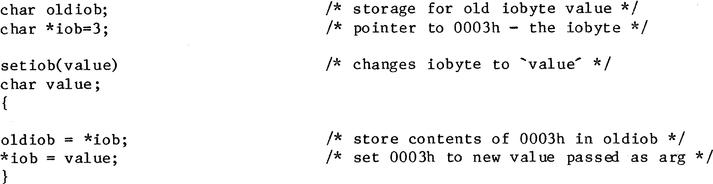

80-Bus News |
November–December 1984 · Volume 3 · Issue 6 |
| Page 30 of 55 |
|---|
Mixed mode arithmetic between these data types is made easy for you as the compiler should sort your assignments out for you. I have in the passed assigned the result of a calculation which was held in a double precision FP variable directly into an integer simply by entering:
int var = double var;
Of course the compiler uses library functions to achieve this transformation which are also available to you for use if required, but it is nice to think that the compiler is intelligent enough to sort this out for you.
‘C’ is also very adept at handling pointers and doing arithmetic with them. You declare pointer variables using the syntax, char *ch_ptr or int *int_ptr, where ch_ptr and int_ptr are variable names. These variables will be used as pointers to character or integer fields and are typically used for processing arrays. An example of how pointers may be put to good use is the alteration of the 10 byte under program control. We know that the iobyte lives at 0003h so here is how we get at it:
The character pointer ‘iob’ is declared as a pointer to 0003h it will be a 16 bit field of course and contains the value 3. If during processing an asterisk is placed infront of iob as in the above example, the contents of the byte that iob is addressing is used.
Should we now wish to do something with the contents of 0004h all we have to do is increment ‘iob’ using ‘iob = iob + 1;’ or more simply ‘iob++;’, iob now points to 0004h.
Pointers can also be used for integer fields, and interestingly, if an integer pointer is incremented as above, it points to the start of the next integer ie. address+2, the compiler has also sorted this out for you.
As you may be unsure as to where in memory your data will reside in its final .COM version ‘C’ provides you with a mechanism whereby you can locate the address of a variable or data structure. This is normally used to initialise the values of pointers. Take the example:
functiony()
{
char arrayx[100];
char *point;
point = &arrayx[0];
..... and so on
| Page 30 of 55 |
|---|